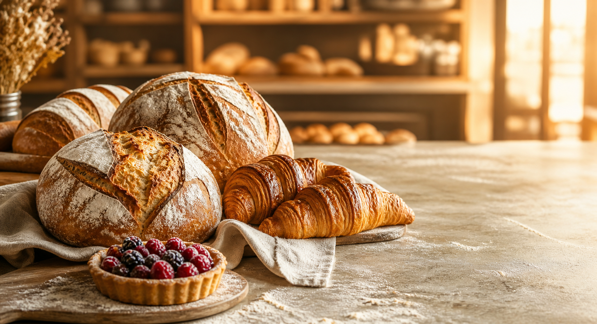

Daily Bread
Country sourdough, seeded rye, focaccia and rotating weekly loaves.

Small batches · Big butter energy
Naturally leavened loaves, golden pastries and little joys made fresh every morning.
Made the patient way
Our neighbourhood bakery is built around proper fermentation, local ingredients and the belief that warm bread can improve almost any day.
Counter favourites
Our counter changes with the season, the weather and whatever fruit looks best that week.
Country sourdough, seeded rye, focaccia and rotating weekly loaves.
Butter croissants, pain au chocolat and seasonal laminated pastries.
Joyful layer cakes in honest flavours for birthdays and good news.
The morning ritual
Come for the crusty loaf. Stay for the coffee, flaky layers and kitchen-window view.
No mystery ingredients
Time does the heavy lifting. We simply listen, fold and bake at the right moment.
Simple ingredients, measured carefully.
Long, slow flavour development.
Every loaf finished by hand.
Dark crust, open crumb, perfect crackle.
“The croissants shatter, the sourdough sings, and somehow the team remembers everyone’s name.”
Save your loaf
Orders are held until noon on your selected collection day.